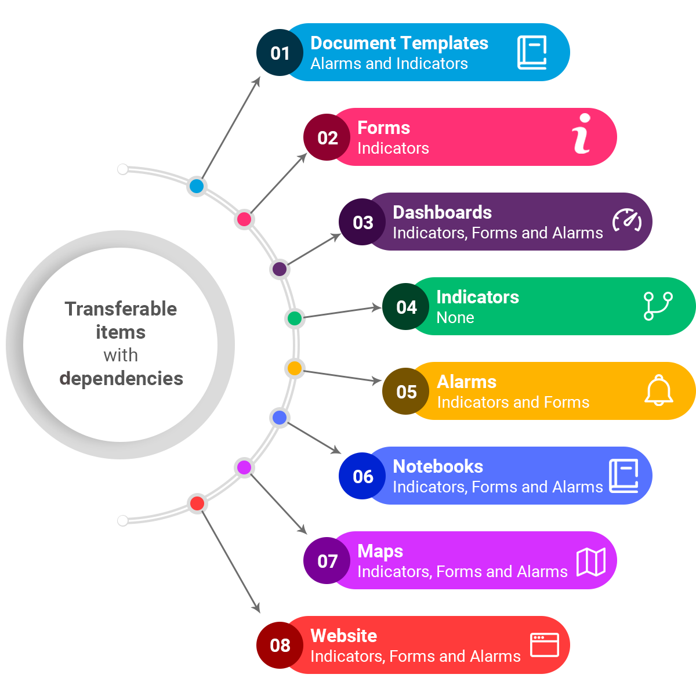
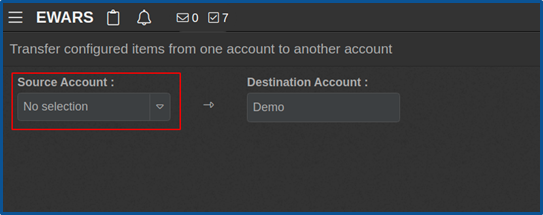
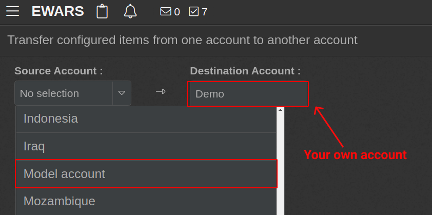
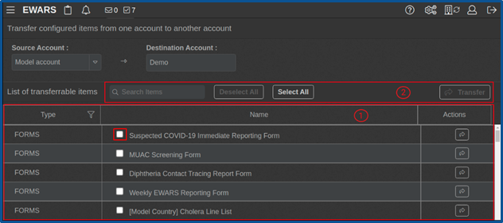
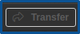
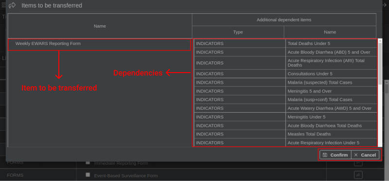
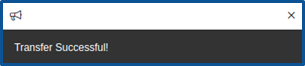

Chapter 4. Configuration Transfer
The Configuration Transfer feature allows users to copy configured items and dependencies from any source account. Configured items are templates. They can be forms, bulletins, dashboards and so on. Dependencies refer to features that are reliant on or influenced by other features. Dependencies linked to the configured items will therefore be transferred with the templates during Configuration Transfer. This feature is for super admin only.
A source account can be any country/context account in the Early Warning, Alert and Response System (EWARS) that contains templates. The Model account is not a real EWARS Country account but is a specially designed source account to share standard templates available for all users. Any new account can copy templates from other active accounts or from a Model account in the system. Users can only copy the templates – not the data.
The Configuration Transfer feature lends speed and efficiency to the process of setting up an EWARS account during emergency settings, thereby improving response time and saving lives in the process.
 Before configuring new items, the Account Administrator can consider using the standard templates and configured items available in the Model account to save effort and maintain uniformity.
Before configuring new items, the Account Administrator can consider using the standard templates and configured items available in the Model account to save effort and maintain uniformity.
4.1 Transferable items
The configured items available for transfer between accounts are document templates, forms, dashboards, indicators, alarms, notebooks, maps and website. These items and their dependencies are shown in Fig. 4.1.
Fig. 4.1. Transferable items and their dependencies

Table 4.1 sets out more information about each of these transferable items.
Table 4.1. Transferable items
| Item type | Short description | Dependencies |
|---|---|---|
| Document templates | The templates are used to generate documents (weekly bulletins), which provide information for analysis and decision-making. | Alarms and indicators |
| Forms | The reporting forms are used for collecting data and information related to specific disease outbreaks or crises. | Indicators |
| Dashboards | The dashboards are used to present data in a visually understandable manner. | Indicators, forms and alarms |
| Indicators | The indicators are bound with the form and help to transform data into relevant information for decision-making. | None |
| Alarms | The alarms are responsible for generating alerts in the system when a disease threat is identified. | Indicators and forms |
| Notebooks | The notebooks are used to perform complex analyses on data within the system. | Indicators, forms and alarms |
| Maps | The maps are used to analyse and display location-based data and present these in the form of maps. | Indicators, forms and alarms |
| Website | A website is created for each source account. | Indicators, forms and alarms |
 Note: Configuration Transfer only copies the empty template. There is no data transfer between the two accounts.| The ability to copy templates from one account to another saves you time that would otherwise be spent setting up forms, dashboards and websites from scratch.|
Note: Configuration Transfer only copies the empty template. There is no data transfer between the two accounts.| The ability to copy templates from one account to another saves you time that would otherwise be spent setting up forms, dashboards and websites from scratch.|4.2 Initiating Configuration Transfer
- Select Configuration Transfer menu in the right panel. The screen below appears:

- Click on the Source Account drop-down menu, and all the EWARS Country accounts in the system are listed. The Destination Account is your own account:

- Select the Source Account from the drop-down menu (e.g. Model account). All the available items inside the Model account are listed as shown below:

Table 4.2 describes the Configuration Transfer screen.
Table 4.2. Configuration Transfer screen descriptions
| Item | Description |
|
|
| Type | This column displays the type of the configured items – e.g. forms, indicators and so on. |
| Name | This column shows the name of the configured items. You can click on the box at the left of the name to select this item for transfer. |
| Actions | The box in this column initiates an individual transfer of the configured item. |
|
|
| Search Items | You can enter keywords/tags associated with the item you wish to search in this box. All transferable items have a tag configuration option inside the relevant configuration screen. The tag makes it easy to search for the item. |
| Select All | You can select all items at once by clicking on the Select All button, rather than selecting individually what you need in your account before transferring. |
| Deselect All | You can click on the Deselect All button to deselect all selected items. |
 | You can click on the Transfer button to help with the transfer of multiple selected items at once. | |
|
- Select the item or items to transfer under Name > click on and a popup box along with all the dependencies appears, as shown below:

- Click on Confirm, and a notification of successful transfer appears, as shown below:

Once the successful transfer of the item(s) is complete, you can see the transferred items in their relevant menus. For example, if you have successfully transferred a form, it is visible under the Forms menu.
Following this, you can also copy sample indicators from the Model account or create new indicator groups. The following chapter will address this topic in greater detail.